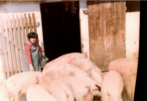
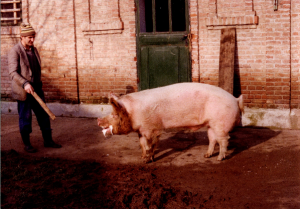
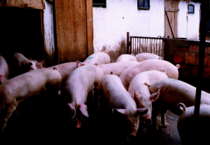
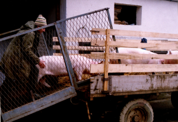

Moji su nabavili svinje kad sam se ja rodio 1952. godine. Do tada su imali samo ovce. Otac je u Rumi kupio pet ženskih prasadi pasmine Fajfer i donio ih u pletenoj rajz-korpi. Od njih je krenulo naše svinjogojstvo. Te godine gradili smo stan na Utvaju na bajeru tri km južno od naše kuće i 500 m sjeverno od šume Renovica iza koje se nalazi šuma Merolino, istočno od Renovice je Šašino (Šašno), a zapadno Muško Ostrovo. Moj otac i djed od pruge su prevozili čamcem ciglu i ostalo potrebno za gradnju, jer su bile poplavljene ponizine što se događalo obavezno kada je Sava visoka.
Za par godina imali smo čopor od tridesetak krmača i proizvodnju od 400 prasadi godišnje od kojih smo stotinjak prodavali u ljeto kao nazimad za dohranu. Djed je na pašnjak išao svaki dan na magarcu, a ja, čim sam prohodao, postao sam svinjogojac. U to prvo vrijeme osim paše bilo je žirovanje i tjeranje u strnjak. Prodaja je bila na sajmovima u Đakovu, Vrpolju, Vinkovcima i Nuštru. S djedom sam kao gimnazijalac nekoliko puta tjerao svinje pješke u Đakovo ili Vrpolje. Kretali bi od kuće u pola noći da bi stigli u 7 sati ujutro.
Mikanovački pašnjak nalazio se južno od željezničke pruge do šuma Muško Ostrovo-Renovica-Šašno na površini 1100 jutara. Bio je u vlasništvu sela i uz naknade svi su mještani imali pravo na ispašu stoke. Slično je bilo i u drugim selima. U drugoj polovici 19. stoljeća neka su mjesta prodala pašnjak uglavnom Nijemcima i podijelila novac. U Mikanovcima je bilo dosta mještana za prodaju, ali je pobijedila struja da pašnjak ostane zajedničko dobro. Na njemu je bilo više od 40 stanova. Vlasnici stanova bili su: Renovački Sokak: Tuna Martinović Agnezin; Okruglo: Pavo Martinović Abadžin, Živlo Petričević Jerkov, Mato Kulundžić, Pero Kovačević, Andro Knežević Garvanov, Joza Abjanić Đurkov, Iva Konjarević i Andra Vukovac; Marino Ostrvo: Ivo i Kuzma Babajić, Marijan Šikić, Martin Salopek, Đuro Brzak, Mato Abjanić, Stipa Babajić, Stipa Petričević Šimin i Živko Ručević; Uljansko: Šimo Ručević; Paćare: Martin Butorac (Đuro Belan); Građansko: Kuzma Jurić, Marko Milošević, Pavo Jurić, Mato Kolarević i Živko Vuksanović; Narače: Pera Jelić, zadruga Jakšić, Marko Vuksanović, Mato Milinković, Živko Lošić, Mato Pejaković, Marijan Jelić, Fila Vuksanović-Tomić, Mato Jurić, Marko Živikić, Boža Svirac, Miško Pejaković, Pavo Kovandžić, Stana Knežević i Marijan Milinković.
Osim stoke koja je boravila stalno na pašnjaku postojale su čorde krava, svinja, a nekada i konja koje su se tjerale iz sela na pašu. Govedar, svinjar i ergelaš svako su jutro trubili u rog što je bilo znak da treba stoku istjerati na ulicu. U vezi toga postoji anegdota koju sam objavio:
Ergelaševa svirka
Prije stotinjak godina sva stoka išla je na ispašu. Na utvaju je bilo četrdesetak stanova, a oni koji nisu imali stan, tjerali su marvu u čordu. Prvo je išla ergela, pa goveda, a zatim svinje. Ergelaš je u samo svanuće trubio u rog kako bi obavijestio ljude da istjeraju konje i ždrebad na drum. Slučajno je uvijek ispalo da bi zastao pred župnikovom kućom i tu najviše trubio. To je u ranu zoru budilo velečasnog Stanka i jako ga smetalo, jer poslije nije mogao zaspati. Zato je pozvao ergelaša, rekavši mu:
– Meni se jako sviđa kako ti sviraš pa bi te molio da tu pred mojim prozorom trubiš što duže i što jače, a ja ću ti za uzvrat staviti polić rakije, pa nazdravi.
Prvo jutro u prozoru je bila bočica kao dukat žute šljivovice i ergelaš je pijuckajući trubio iz sve snage pola sata. Slijedeći dan je opet čekala rakija i opet je svirka bila dugotrajna i gromoglasna.
Treće jutro nije bilo boce i ergelaš je malo odsvirao, nadajući se da će sutra biti po dogovoru. Kad je i sutra zatekao prazan prozor, jako se naljutio i nije htio ni puhnuti u rog. Od tada prestane trubiti čim se približi župnikovoj kući. Ne zasvira dok se ne udalji pol kilometra.
– Ne daš ti rakiju, neću ja svirati. – ponavljao u sebi svaki dan.
Zahvaljujući Utvaju Mikanovčani su mogli školovati djecu te su početkom 20. stoljeća imali tridesetak djevojaka i momaka u gimnaziji i na fakultetu. Moja prabaka je školovala dvije kćeri, a slično je bilo i kod Abadžini. Iz Ručevića zadruge bilo je najviše đaka.
Nakon 2. svjetskog rata broj stanova se smanjio. Ostalili su na podgajačkoj strani Jelići, Tomići i Jurići, a na Šušnjaračkoj Agnezini, Abadžini, Belanovi i naši Jerkovi i bili su trn u oku tadašnjoj vlasti. Partizanski sinovi su tvrdili da je pašnjak mrtvi kapital, iako je na njemu između ostalog boravilo 800 krava u 3 čorde. Daleko im je najviše smetao moj otac Živko Petričević koji je imao 100 ovaca i 30 krmača te prodavao godišnje 100 jaganjaca, 100 nazimaka i nekoliko stotina prasaca i od tog gradio kuću dugu 40 m s gredama od 9 m. Tadašnji vlastodršci pokušali su bezuspješno sadnju kanadske topole na pašnjaku te sjetvu ječma, kukuruza i konoplje. Obzirom na klimu, vrstu zemljišta i tehnologiju proizvodnje, sve je bilo neuspješno. Ječam je bio toliko loš da ga nisu vršili. Preorali su svu ledinu desetak metara istočno od našeg stana. 1976. su nas potpuno istjerali. Tada su preko kanala Kaluđera zasadili žir.
Ja sam kao dijete od desetak godina pomagao puno u radu s ovcama tako da sam među sto ovaca znao majku svakog janjeta. S ocem sam išao na sajam prodavati svinje i naučio sam se cjenkati.
Samostalno sam se počeo baviti uzgojem svinja nakon ženidbe. Od novčanih poklona s vjenčanja kupili smo supruga i ja 10 prasadi pasmine Landras i za par godina imali farmu od trideset krmača. Nismo imali tov već smo prodavali prasad privatno za svadbe, karmine, rođendane i za tov. Od zarade smo bez socijalističkih kredita napravili kuću i kupili aute Jugo 45 i Peglicu. Pasminu Hypor nabavili smo1986. godine. To je bila nizozemska hibridna svinja. Da ne bi bilo zabune objasnit ću hibridizaciju.

Postoje 3 uzgojne metode: uzgoj u čistoj krvi, križanje i hibridizacija. Uzgoj u čistoj krvi je parenje svinja unutar iste pasmine. Postoje tri tipa pasmina: masne: mangulica, bagun, šiška, bikovačka (subotička), turopoljska, šumadinka; mesno-masne: crna slavonska (fajferica), moravka, resavka, krško-poljska te berkšiš, kornval, tamvort; mesni tip: veliki jorkšir, švedski. nizizemski, danski, belgijski landras, pietren, hemšir, duruk te kineske: taihu, meishan, fenging (crna), jinhua (bijela), ninsiang (šarena).
Kod križanja postoji jednostruko, dvostruko i križanje u cilju pretapanja tako da se krmače jedne pasmine, najčešće primitivnije pare kroz više generacije s nerastima druge bolje pasmine.

Hibridne svinje su ustvari križanci uzgojeni posebnim metodama križanja i selekcije s ciljem da se dobiju iznadprosječni rezultati. Koriste se specijalne muške i ženske linije koje se stvaraju selekcijom unutar iste pasmine ili križanjem dviju ili nekoliko čistih pasmina. Na taj se način stvara nekoliko sintetičkih linija koje se opet križaju. Izvodi se ogledni tov i ogledno klanje iz raznih križanja i pronalazi najbolja kombinacija za proizvodnju tovljenika. Prilikom selekcije u obzir se uzimaju slijedeće osobine: broj oprašene i othranjene prasadi, težina prasadi pri porodu i starosti od 20 i 60 dana, ujednačenost prasadi, majčinske osobine krmače (mliječnost, pažljivost pri lijeganju, vrijeme od odbića do parenja, ponavljanje tjeranja), otpornost na bolesti prasadi i krmača, osjetljivost na uvjete u prostorijama, ovisnost o vrsti hrane koju jedu, kvaliteti i količini mesa tovljenika, konverziji hrane, dnevnom prirastu i smrtnosti u tovu.

Hypor ima linije A; B; C i D. Od A se ostavljaju muški, od B ženske i križanjem A i B dobiju se nerasti AB. Od C se isto tako uzimaju muški, od D ženski i križanci CD su krmače. Križanjem nerasta AB i krmače CD dobiju se najbolji tovljenici. Pradjedovske linije A,B, C, D su se uvozile iz Nizozemske i tu proizvodile djedovske te križanjem dobivali nerastići AB i nazimice CD. Svinjogojcima su prodavani kad su bili stari 6 mjeseci i teški 100 kg po cijeni koja je bila oko jednog i pol tovljenika od 100 kg.

Deset godina sam uspješno surađivao s Reprocentrom u Andrijaševcima. Za vrijeme rata ostao sam na samo 3 krmače te sam radio uslužno za Centar te sam od njih dobivao nazimice CD i neraste AB. Kod mene su se parili i Centar je prodavao suprasne nazimice, a ja sam dobio novčanu naknadu za svoj rad. Tako sam isporučio 500 komada. Oko 1995. promijenila se vlasnička struktura Centra i odustalo se od programa Hypor te sam nastavio križanje krmača CD s nerastima landras za proizvodnju krmača, a nerastima pietren za proizvodnju tovljenika. U zadnje vrijeme imao sam 40 – 50 krmača. 31. 10. 2023. usmrćeno mi je 343 komada zbog pojave kuge.